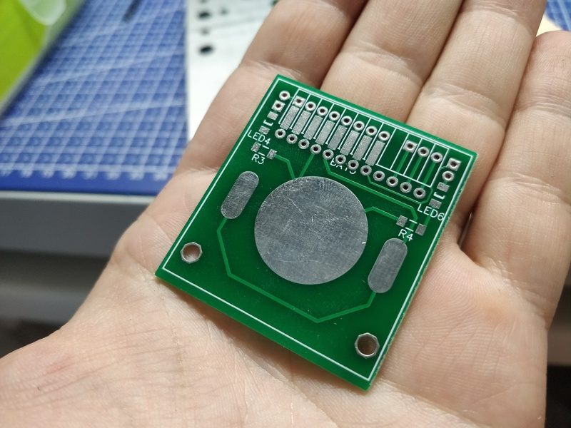

Про умный дом, разношёрстность и закидывание деньгами

Я уже много тут писал про минимализм и попытки обойтись малым. Иногда стремление к этому выходит за рамки рационального. Скажем, мне намного дешевле с учётом стоимости моего времени купить какую-нибудь железку, чем пытаться сделать её самому, но иногда просто хочется сделать что-то именно своими руками, разобраться. К сожалению, в области радиоэлектроники и микроконтроллеров я дилетант и никак не могу найти времени чтобы в этом достичь хоть какого-то прогресса, но кое-что можно сделать и на этом уровне. Ещё меня постоянно кидает из стороны в сторону и я постоянно переключаюсь с умного дома на 3д печать, с 3д печати на моделирование, с моделирования на что-то ещё. Благо, что зачастую эти сферы соприкасаются друг с другом и навыки, полученные в одной оказываются полезными в иной там, где этого не ожидаешь.
Теги: smarthome, automatization, lifehack, minimalism
Простое приспособление для разделения печатных плат

Как я уже писал в прошлом посте, я зимой получил горсть печатных плат. Есть такой сервис, как JLCPCB, который дёшево производит печатные платы хорошего качества. Есть только одно но - минимальный заказ 10 штук и платы должны быть не больше, чем 10*10 сантиметров. Но дело в том, что на площади в 10*10 сантиметров порою можно разместить множество небольших плат для различных устройств. Есть различные способы разделения плат. Можно заказать пропил между платами, можно прокатку (между платами делается ложбинка, по которой их можно разломить), но когда у тебя на руках уже есть две платы на одном куске текстолита, которые нужно разделить, на помощь приходит старый дедовский способ - стальная линейка и канцелярский нож.
У данного способа есть очевидные недостатки. Во-первых, стальная линейка достаточно тонкая, а во-вторых - достаточно гладкая. Поэтому в процессе реза её можно случайно сдвинуть или нож может уйти в сторону, потому что каждый раз, когда я пытался прорезать в плате углубление, я боялся, что при достаточно сильном давлении в сторону руки, которая держит линейку, нож сорвётся и выскочит на линейку. Одним словом, есть опасность повредить руку. И, кажется, я нашёл метод, с помощью которого можно усовершенствовать данный способ, используя гуано и веточки легкодоступные и дешёвые ресурсы.